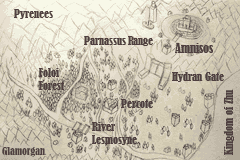

Vasiliki, Scymerius, and Fructuoso will have their first camp conversation here if they were just hired.
(Hestia gives Kyra either a Lancesplitter or Axecrusher depending on her earlier answer.)
We shall soon be crossing the twin bridges anew, correct?
(serious) And with that, I shall get back to it. If you would give me some room...
[Soter and Phobos' support increases to rank B.]
If you agree
[All of Laertes' stats increase by 1.]
If you refuse
[Kyra gains 1 Magic.]
[Alonso and Teresa's support increases to rank B.]
If Aura was not defeated in Chapter 14
Perhaps I shall simply replace
spite with spite.
To oblivion with the Mother
and Her church.
I would join you and see them
all put in the dirt.
Of course, I cannot force you
to accept me, but...
You aren't exactly drowning in
warriors of the skies, right?
I promise you, I am not truly
the duplicitous sort.
Let me buy your trust with
plentiful inquisitorial blood.
Perhaps I shall simply replace
spite with spite.
To oblivion with the Mother
and Her church.
I would join you and see them
all put in the dirt.
You aren't exactly drowning in
warriors of the skies, right?
And if any of your comrades
harbor any doubts...
I shall buy their trust with
plentiful inquisitorial blood.
Perhaps I shall simply replace
spite with spite.
To oblivion with the Mother
and Her church.
I would join you and see them
all put in the dirt.
Of course, I cannot force you
to accept me, but...
You aren't exactly drowning in
warriors of the skies, right?
I promise you, I am not truly
the duplicitous sort.
Let me buy your trust with
plentiful inquisitorial blood.
Perhaps I shall simply replace
spite with spite.
To oblivion with the Mother
and Her church.
I would join you and see them
all put in the dirt.
You aren't exactly drowning in
warriors of the skies, right?
And if any of your comrades
harbor any doubts...
I shall buy their trust with
plentiful inquisitorial blood.
(He gives the visitor a Wolf Beil.)
Ah, but it's too much trouble.
What if some fairy rises from the lake and
asks me to save the world or something?
Nuh-uh. I ain't risking it. I'm not leaving
this chair for nothin' in the world!
(Vasiliki's father tries to get up, but can't.)
Mmph...
Which of these colors is missing from the brave lance icon?
If you answer correctly
If you answer incorrectly

(Apate startles.)
...! Mmph...!
Listen, I know how this looks...
But my brother could be bleeding
to death right now.
Or... Or maybe his condition has
worsened since we split up...
Whatever it is, it's got to be really
bad.
Redbeard wouldn't have asked for
you in particular otherwise.
I can't risk it... I just can't.
Nicaea
A Tartaran squire and middle of three triplets. She seeks new purpose after quenching her thirst for revenge.
Aura
A Tartaran squire and youngest of three triplets. A cheerful and devout believer in the theocracy's doctrine.
Euryma
A high-ranking general in the inquisition tasked with awaiting Kyra's group at the border.
Alba
Second-in-command of General
Euryma. Steadfastly loyal.
?????
A very peeved lady of the lake.
Inquisition
Knights of Tartaros, standing tall against heresy and insurrection.